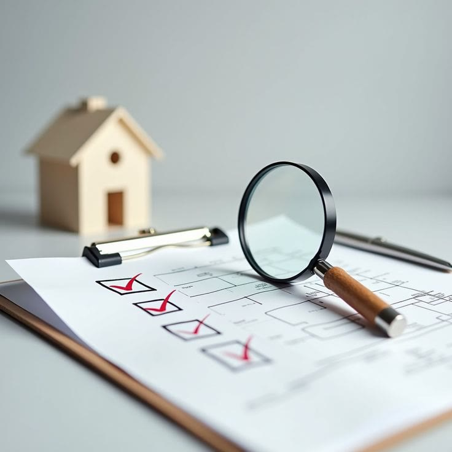

02 / 04
Concluído
Casa Santana de Parnaíba
Projeto e execução completos da residência, dos ambientes internos às áreas externas.
P2 Engenharia e Avaliações
Engenharia credenciada às maiores instituições financeiras do país
Avaliações imobiliárias, engenharia diagnóstica, vistorias, inspeções, assistência técnica, projetos e reformas para entender um problema, avaliar um patrimônio ou decidir com respaldo técnico.
Você não precisa saber qual laudo ou serviço precisa. Conte o que está acontecendo e a P2 orienta a abordagem técnica mais adequada.
Projetos realizados
Uma seleção de obras, reformas e ambientes conduzidos pela P2 — do planejamento à execução.
Concluído
Ambientação, iluminação e mobiliário completos para os diferentes ambientes do apartamento.
Concluído
Projeto e execução completos da residência, dos ambientes internos às áreas externas.
Concluído
Ambientação da guarita e integração paisagística do entorno, tornando o acesso mais acolhedor e funcional.
Em execução
Execução de sanca e instalação das luminárias, integrando acabamento e iluminação aos ambientes.
Toque nas imagens para ampliar
Do problema à decisão
Quem procura a P2 nem sempre chega pedindo um laudo. Muitas vezes chega com uma dúvida, um problema ou uma decisão que precisa tomar.
Quanto este imóvel realmente vale?
De onde vem essa infiltração?
Essa fissura exige atenção?
Como documentar essa situação?
Preciso de suporte em um processo?
O condomínio precisa de uma inspeção?
É seguro receber este imóvel?
Quais riscos preciso considerar?
O que você recebe
Áreas de atuação
Determinação técnica de valor para apartamentos, casas, terrenos, imóveis comerciais, galpões, imóveis industriais e outros patrimônios.
Investigação de manifestações e problemas construtivos para compreender condições, possíveis causas, riscos e implicações técnicas.

Análise e documentação técnica das condições de imóveis e edificações conforme a finalidade de cada trabalho.
Suporte técnico para demandas relacionadas a imóveis, construção civil, conflitos e processos.
Para quem é
Vistorias, avaliações, análises e suporte técnico.
Patologias, inspeções, infiltrações, fachadas e áreas comuns.
Apoio para entender problemas e decidir com segurança.
Assistência técnica, quesitos, pareceres e perícias.
Avaliações e demandas ligadas ao patrimônio imobiliário.
Análises para decisões de compra, venda e investimento.
A P2 analisa a situação, documenta tecnicamente o cenário e fornece elementos para que condomínio, síndico e administradora compreendam melhor o problema antes de definir as providências.
Estrutura técnica
A P2 reúne responsáveis técnicos, profissionais especializados e parceiros de diferentes áreas, organizando cada trabalho conforme sua natureza, complexidade e finalidade.
À frente da área de Avaliações Imobiliárias, com apoio de profissionais especializados conforme a demanda.
À frente das áreas de Engenharia Diagnóstica, Patologias, Vistorias e Obras.
“Conhecimento técnico aliado à experiência de campo.”
Projetos, obras e reformas
A P2 também atua em projetos, obras e reformas para clientes que valorizam qualidade de execução, acompanhamento profissional e maior segurança sobre o patrimônio.
Antes de falar com a P2
Você não precisa saber. Conte o que está acontecendo e a P2 orienta qual abordagem técnica faz sentido.
Sim. A Engenharia Diagnóstica é uma das principais frentes da P2 e pode envolver investigação das manifestações, possíveis causas, riscos e documentação técnica.
Sim. A P2 atua em patologias, inspeções, vistorias, fachadas, coberturas, áreas comuns e outras situações técnicas.
Sim. A P2 pode prestar assistência técnica em situações relacionadas a imóveis, engenharia e construção civil.
O investimento depende do imóvel, finalidade, escopo, documentação disponível e complexidade do trabalho.
Sim. Projetos, obras e reformas fazem parte de uma segunda frente da empresa, especialmente para clientes que valorizam acompanhamento técnico e qualidade de execução.
Vamos conversar
Explique a situação. A P2 entende a necessidade, estrutura o atendimento e indica o caminho técnico mais adequado.
Solicitar análise do meu caso →